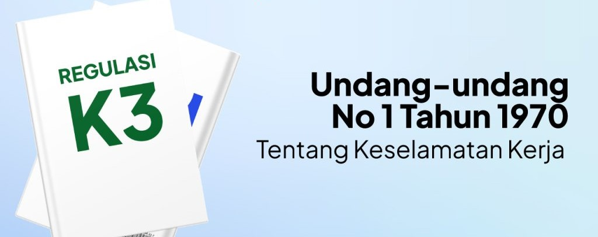
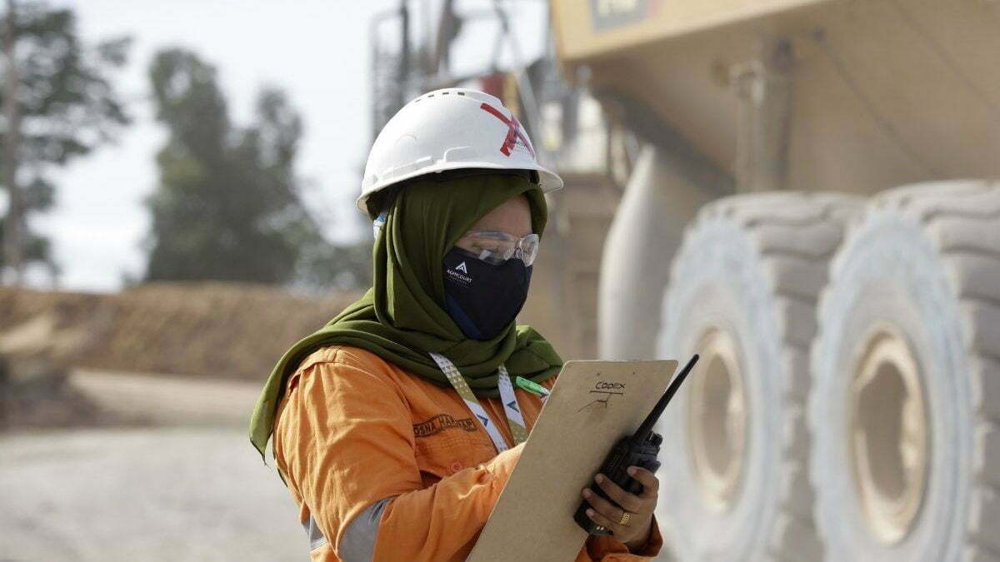

Keselamatan dan Kesehatan Kerja (K3) diatur dalam Undang-Undang No. 1 Tahun 1970 tentang Keselamatan Kerja.
Tujuan utama K3 adalah melindungi tenaga kerja dari kecelakaan dan penyakit akibat kerja, serta menciptakan tempat kerja yang aman, efisien, dan produktif.
Penerapan UU K3 sangat penting untuk mencegah kecelakaan kerja dan menjaga kesehatan pekerja.
Perusahaan wajib menyediakan alat pelindung diri (APD), memberikan pelatihan keselamatan kerja,
serta memastikan kondisi lingkungan kerja tetap aman dan sesuai standar.
Dengan demikian, produktivitas dan kesejahteraan tenaga kerja dapat meningkat.

Isi Pokok UU No. 1 Tahun 1970:
- Menjamin keselamatan setiap tenaga kerja dan orang lain di tempat kerja.
- Menjamin penggunaan produksi secara aman dan efisien.
- Melindungi sumber produksi agar dapat dipakai secara aman dan efisien.

Penerapan UU K3 di Tempat Kerja
Implementasi UU K3 melibatkan semua pihak di perusahaan, mulai dari manajemen hingga pekerja.
Setiap pekerja wajib mematuhi prosedur keselamatan, sementara perusahaan harus melakukan inspeksi rutin,
menyediakan pelatihan, dan memperbaiki potensi bahaya kerja secepatnya.